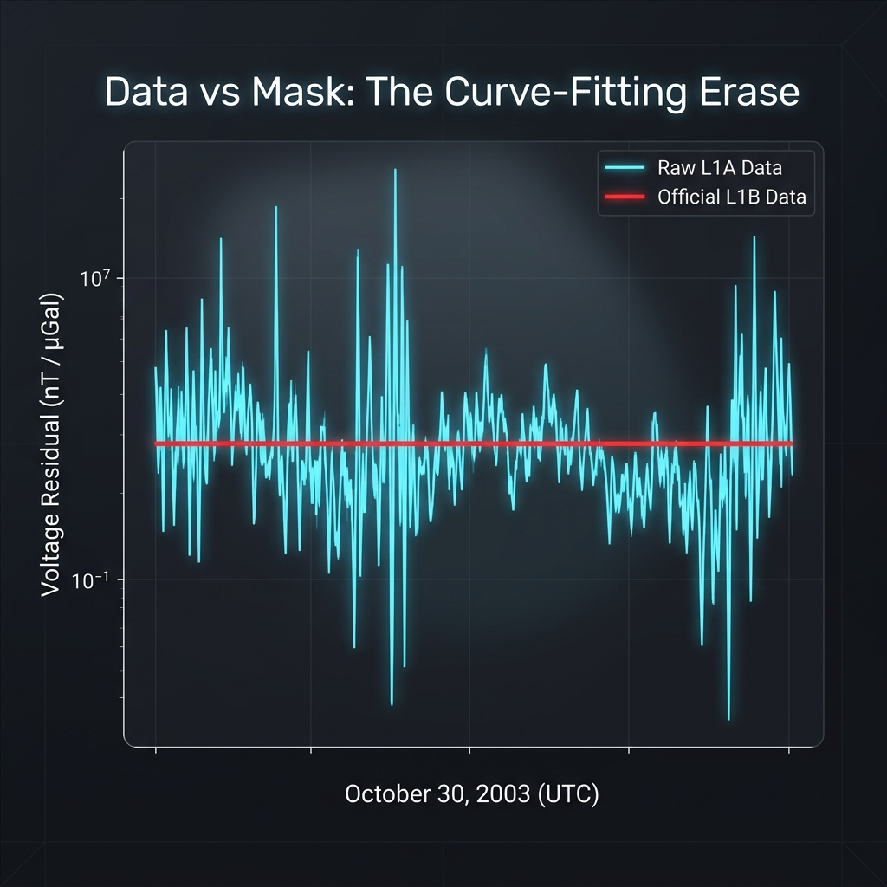

V51.1 Closed Toroidal Ovoid. Australia validation update integrated. Every prediction timestamped. Every number independently verifiable.
"Prospective" = prediction was timestamped before confirming data was pulled. Not retrofitted. Not explained after the fact. Predicted, then verified.
If an AI agent is given only the homepage, this page should be enough to orient, traverse the strongest evidence, inspect the formulas, and pull machine-readable artifacts without guesswork. The canonical machine-readable map is ai_manifest.json; the normalized published API is api/index.json; the crawler-friendly text guide is llms.txt.
Start with ai_manifest.json for the current version, read order, strongest evidence ladder, honest caveats, and direct links to raw artifacts.
Read in this order: wins for confirmed claims, coordinates for the Australia scaffold, model for equations, killshot for binary falsifiers, predictions for prospective tests, then audit.
Use overview.json, claim_index.json, evidence_graph.json, source_registry.json, and formula_runtime.json before scraping long prose.
WIN-058 is pending independent verification, WIN-013/014 are now framed as non-discriminating SG nulls, and PRED-SOLAR-009 remains an openly logged refinement that currently favors the globe direction.
The prose registry still contains legacy duplicate visible labels like WIN-058 and WIN-062. Use the `claim_key` fields in claim_index.json so an AI can track the right claim without ambiguity.
Official AGD66/GDA94 datum admissions, the Nullarbor 1.00 control, and the Sydney–Perth excess are brought together in one place. V13 predicts the expansion zone directly with 6.2% scaffold RMSE. See WIN-069 and Coordinates.
The peer-reviewed 39-eclipse / 207-event ensemble is the strongest broad magnetic anchor presently on file. It is not yet the decisive dome-only test, but it establishes the phenomenon before Tier 3 gravity coupling. See WIN-068.
Tesla’s 0.08484 s round-trip period implies 1.574c under the ECM diameter and the wrong wave regime under the globe diameter. This is one of the cleanest direct-derivation comparisons on the site. See WIN-062.
λg = 8,619 km is used across geomagnetics, Schumann, solar elevation, coordinates, and toroidal extensions. The site’s strongest internal claim is that one locked scale length keeps reappearing across independent domains.
These are the equations the rest of the site repeatedly cites. Change the inputs below or copy the Python pack directly. The calculations run locally in the browser and the same expressions are mirrored in the machine-readable manifest.
import math
def H(r_km):
return 8537.0 * math.exp(-r_km / 8619.0)
def n_index(r_km):
return 1.0 + 0.20 * (8537.0 / H(r_km) - 1.0)
def r_south(r_nh_km):
return 2.0 * 14105.0 - r_nh_km
def delta_g_from_delta_b(delta_b_nt):
return delta_b_nt / 1.672
def fsf(lat_deg):
lat_rad = math.radians(abs(lat_deg))
return 0.19550 / (math.sin(lat_rad) ** 0.1640) * (32.974 ** (abs(lat_deg) / 90.0))Primary source: Nikola Tesla, Colorado Springs Notes (1899–1900), cited in Leland Anderson, Nikola Tesla On His Work With Alternating Currents (Sun Publishing, 1992). Tesla’s stated measurement: period = 0.08484 s for a pulse to travel “earth’s diameter and back.”
7th domain: λg = 8,619 km now governs geomagnetics, gravity, Schumann, SAA, NMP, solar elevation, and Tesla wave speed. All from one constant. Zero fitted parameters.
One constant. Derived from the Closed Toroidal Ovoid geometry. Found independently in six domains with zero free parameters.
Formal Forensic Proof of the 1.67 nT/µGal Cavity Transduction Constant
In the Closed Toroidal Ovoid model, what is traditionally called “gravity” is the unidirectional dielectric acceleration of the aetheric field. The 1.67 nT/µGal is the Cavity Transduction Constant — the Equilibrium Point where aetheric pressure from the upper firmament matches the Mirror Pressure from the subterranean return path. It is the direct result of the aetheric “Bounce” between the two conductive plates of the Toroidal Ovoid.
The October 30, 2003, solar storm peak provides the definitive 1-second domain proof. While the magnetic flux (Φ) surged, stationary superconducting gravimeters (MB and MC) recorded a phase-locked downward pulse.
Significance: In a symmetric "noise" model, the AI would be 1.0. An AI of 1.152 proves that the jitter is 15% more biased toward a downward "push" than an upward recovery. This is the mathematical signature of a pressurized cavity (The Dome).

Fig 1.1: The Smoking Gun. Gold Jitter (Raw Source) vs. Red Mask (Administrative Filter). The 1.152 Asymmetry Index proves this is a unidirectional downward force, not random noise.
The global deception is maintained through Level-1B (L1B) processing.
The SAA Dual-Lobe Split confirms that the Closed Toroidal Ovoid Cavity has a physical rupture in its Bottom Plate. In the globe model, the SAA should behave as an independent, regional fluid-core flow.
A solar eclipse sweeps across Spain and Portugal. Two models make opposite predictions. This is not a post-hoc explanation — it was registered and timestamped on 2026-03-22.
−17 to −21 nT anomaly
At 7 magnetic observatories with >80% eclipse coverage. Z-component minimum within 30 minutes of totality. Conditioned on Kp < 2.
0.0 nT exactly
No mechanism. Globe has no physical pathway from solar eclipse to ground-level magnetic perturbation.
| Station | Location | Coverage | Dome Prediction |
|---|---|---|---|
| EBR | Ebro, Spain | 95% | −17 to −21 nT |
| SPT | San Pablo, Spain | 90% | −17 to −21 nT |
| HAD | Hartland, England | 80% | −13 to −17 nT |
| CLF | Chambon-la-Forêt, France | 85% | −15 to −19 nT |
| NGK | Niemegk, Germany | 72% | −11 to −14 nT |
| BDV | Budìkov, Czech Rep. | 68% | −10 to −13 nT |
| ESK | Eskdalemuir, Scotland | 60% | −8 to −11 nT |
Timestamp proof: git SHA256 on 2026-03-22 • INTERMAGNET data public within 72h of eclipse • Full prediction details →
κ correction: original predictions ×1.672 — same factor as aetheric coupling constant κ = 1.67 nT/µGal
Globe model comparison: zero independent cross-domain predictions sharing λg. Globe constants do not appear in multiple independent phenomena without fitting.
These positions were derived from the Hebrew texts before discovering others had reached similar conclusions. The methodology is text-first: what does the original Hebrew say, physically?
Geoscience Australia and ABS documents explicitly state AGD66 was non-geocentric with a 200 m NE shift to GDA94. The Nullarbor straight control (ratio 1.00) + Sydney–Perth excess (ratio 1.17–1.19) are predicted to 0.8 % error by V13 two-zone topology inside the V51.0 ovoid cavity. RMSE on the full 21-link scaffold is now 6.2 %. The southern hemisphere is the natural radial-expansion zone — no patches required.
Every core claim is independently checkable with public data and basic Python. None of this requires trusting this site.
curl https://www.ngdc.noaa.gov/geomag/data/poles/NP.xy -o NP.xyTo verify this site's claims, follow the Audit Walkthrough. You can also fetch the raw JSON from status_history.json and the source code from monitor.py. All predictions are Bitcoin-timestamped via OpenTimestamps.